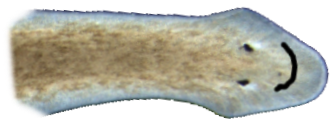
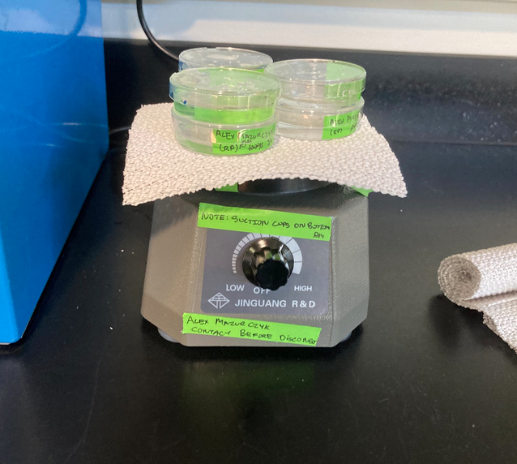
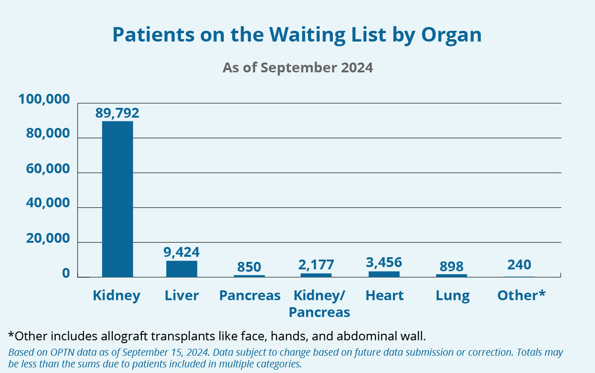
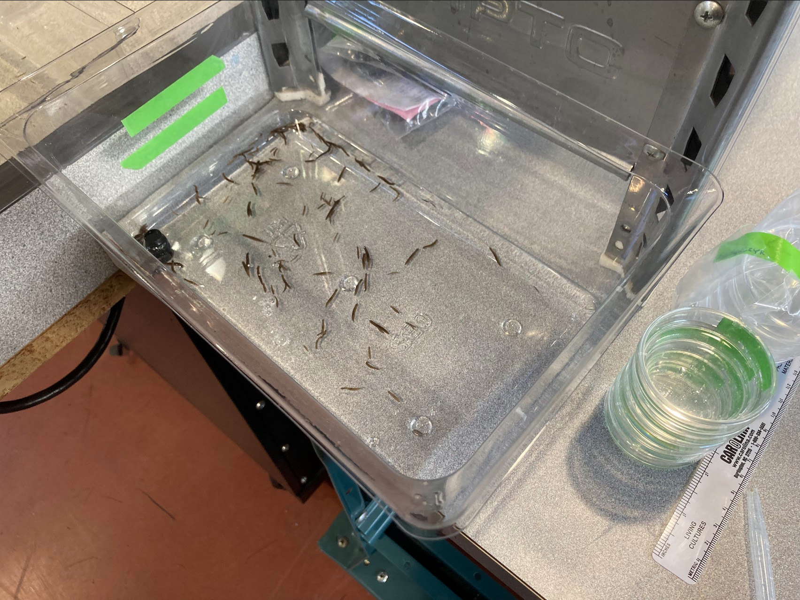

Authors
Procedure
Results
Shaken Not Stirred
The Effect of Vibration on Planarian Regeneration Speed


Background
There is a large demand for organ transplants in the United States and around the globe.
When one of a person’s organs fails, it often means that
they need a replacement from a living or very recently dead human being.
Currently, there are not enough donated organs to keep up with demand.
>100,000 patients in the United States are on the waiting list
13 patients die each day while waiting for a donation
A method to generate new organs for use in transplants without a donor would be lifesaving.
Rationale
Studying the regeneration methods of planaria as well as other models can help inform researchers when designing methods for humans
The data collected in this study hopefully has expanded the data known about this organism, and in the study of regenerative tissue.
Cheap and easy methods of accelerating regeneration (such as vibration) would be invaluable when regeneration becomes possible large-scale.
